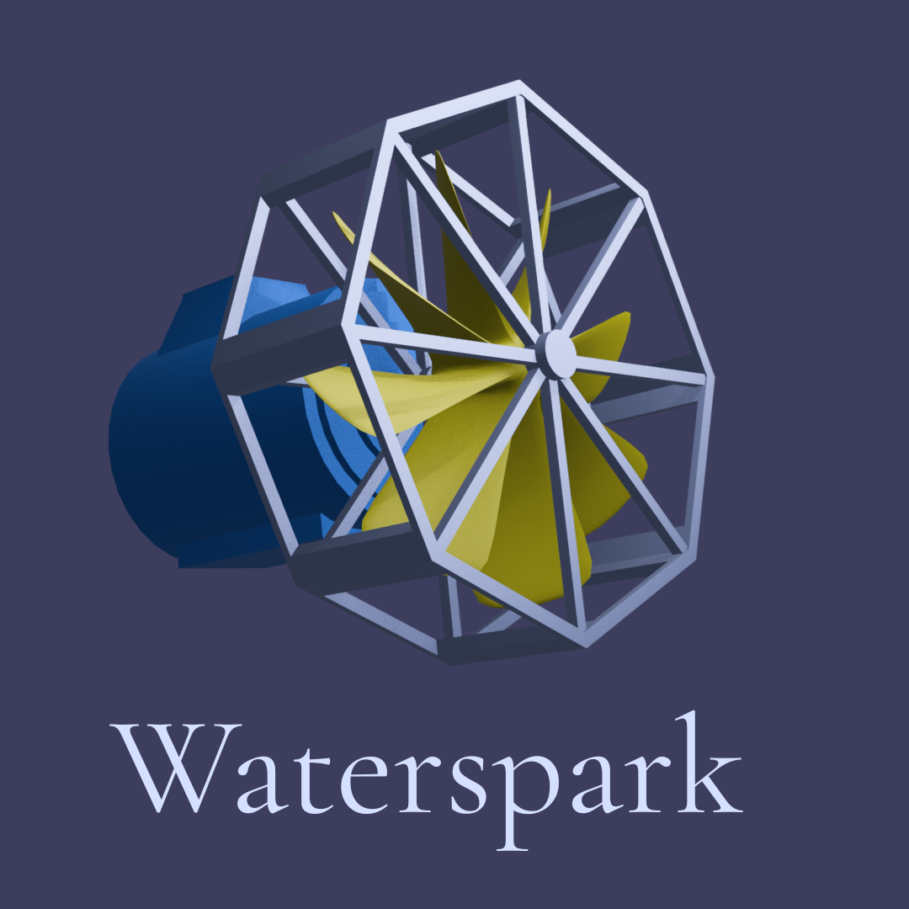

1. Mục tiêu của dự án
WaterSpark hướng đến việc phát triển turbine nước quy mô nhỏ, dễ lắp đặt và giá rẻ, giúp chuyển đổi năng lượng dòng chảy tự nhiên thành điện năng sạch. Dự án hướng tới giải pháp xanh, bền vững và cộng đồng hóa, giúp các hộ dân tự chủ năng lượng mà không phụ thuộc vào nguồn điện lưới hay nhiên liệu hóa thạch.
Nhiều khu vực nông thôn, miền núi hoặc vùng ngoại ô vẫn phụ thuộc vào máy phát diesel và điện không ổn định, gây ô nhiễm, tốn chi phí và thiếu bền vững. Dù đã có những mô hình thủy điện mini, đa số vẫn còn thiếu hiệu quả và độ bền do hạn chế vật liệu, kỹ thuật và thiết kế. WaterSpark tận dụng cơ hội đó để tạo ra nguồn năng lượng tái tạo, rẻ và đáng tin cậy, hướng tới mô hình năng lượng–nước bền vững.

2. Đối tượng mục tiêu
- Primary: Hộ gia đình vùng nông thôn, miền núi; học sinh và sinh viên ngoại ô quan tâm tới khủng hoảng năng lượng; trường học nhỏ; hộ kinh doanh thiếu điện ổn định.
- Secondary: Các gia đình đô thị yêu thích lối sống xanh, tổ chức phi chính phủ về môi trường, và các trường đại học nghiên cứu năng lượng tái tạo.
Các nhóm này đều tìm kiếm giải pháp bền vững, chi phí thấp, dễ chế tạo (DIY) để có thể áp dụng và chia sẻ trong cộng đồng.
3. Hiệu quả
Dự kiến hoàn thiện nguyên mẫu Waterspark trong 2 tuần, chi phí dưới 2 triệu đồng/bộ.
Sau các tính toán, turbine đạt hiệu suất 60–80%, tạo ra 100-150W điện năng – đủ cho các thiết bị cơ bản. (Cụ thể ở dưới.)
4. Lộ trình
- Giai đoạn 1: Thiết kế & thử nghiệm vật liệu tái chế (đã hoàn thành).
- Giai đoạn 2: Chế tạo và kiểm tra nguyên mẫu (đang tiến hành).
- Giai đoạn 3 (2026): Thử nghiệm cộng đồng và cải tiến mở rộng.
1. Cấu trúc của turbine nước nhỏ
Cấu trúc của turbine được đơn giản hóa tối đa nhằm dễ dàng chế tạo và lắp đặt.
Các thành phần chính:
- Một cánh quạt turgo-like;
- Một máy phát điện;
- Một bộ khung nhựa hoặc thép.
Cánh quạt quanh được gắn liền với máy phát điện, đặt trong bộ khung nhựa giúp cố định và bảo vệ các bộ phận.
2. Cơ chế hoạt động
Turbine được thiết kế theo dạng in-stream, đặt trực tiếp trong dòng nước. Dòng nước chảy qua sẽ làm quanh cánh quạt, động năng của thanh quay sẽ được máy phát điện chuyển hóa thành điện năng.
Nguồn điện được sản sinh sẽ được lưu trữ trong các tủ điện và phân phối đến các thiết bị điện.
3. Hiệu suất kỳ vọng
Bỏ qua các điều kiện gián tiếp bên ngoài, trên lý thuyết, với một máy phát điện nhỏ có công suất khoảng 500W, ta sẽ tính toán được:
P = pgQH
- p: khối lượng riêng của nước (≈1000kg/m^3)
- g: gia tốc trọng trường (≈9.81,/s^2)
- Q: lưu lượng thể tích (m^3/s)
- H: tổng cột nước hữu ích (m)
Với mẫu nhỏ H = 2m, và Q = 0.01 m^3/s, ta có được công suất:
P = 1000*9.81*0.01*2*0.5 =196.2 (W)
Với turbine nhỏ, ta lấy η = 80%, ta tính được công suất toàn hệ:
P_turbine = 98.1 * 80% = 156.96 (W)
Công thức như trên áp dụng với các trường hợp khắc khe. Trên thực tế, trong điều kiện sông hồ, ta có thể tăng H lên khoảng 3-4m và Q từ 0.1-1m^3/s.
Lượng điện sản sinh có thể đủ để chạy 15 chiếc đèn LED 10W, TV nhỏ, hoặc tủ lạnh mini.
4. Nơi lắp đặt lý tưởng
Turbine nước vận hành nhờ vào dòng nước nên thuận vị trí thích hợp nhất là ở các sông, suối có dòng chảy ổn định.
Tuy nhiên, nếu nơi lắp đặt không đáp ứng đủ các điều kiện trên, hoặc vào mùa khô nước bị cạn, chúng ta có thể ứng phó bằng cách lưu trữ nước trong bể và tích nước trong mùa khô để duy trì sự hoạt động của turbine. Bên cạnh đó, việc áp dụng các dạng năng lượng tái tạo khác cũng góp phần làm ổn định nguồn năng lượng ở khu vực.
5. Đánh giá ưu và nhược điểm
a. Ưu điểm:
Hiệu quả về nguồn nước: Không đòi hỏi lưu lượng khổng lồ, có thể hoạt động ổn định với dòng chảy nhỏ; lắp đặt phân tán, gộp lại vẫn tạo nguồn điện đáng kể.
Ít tác động môi trường: Không chặn dòng, không tích nước quy mô lớn nên hầu như không gây xói lở, xâm nhập mặn hay suy giảm chất lượng nước.
Giảm thiểu rủi ro vận hành: Không gây ngập lụt bất ngờ hay thiếu nước mùa khô.
Lợi ích xã hội: Chi phí thấp, chế tạo đơn giản, phù hợp cho cộng đồng miền núi, nông thôn. Người dân có thể tự lắp đặt và khai thác ngay trên suối, kênh mương gần nhà, tăng cường sinh kế mà không cần di cư, giúp cải thiện thu nhập nông nghiệp và mở rộng diện tích đất tưới.
b. Nhược điểm:
Phụ thuộc nguồn nước: Hiệu suất có thể giảm rõ rệt khi lượng nước giảm, đặc biệt là vào mùa khô;
Hiệu suất chưa được cao: Thiết kế nhỏ gọn làm giảm thiếu tương đối hiệu suất toàn hệ;
Thách thức về độ bền: Dễ bị ảnh hưởng bởi các yếu tố trong môi trường nước như tạp chất và đất đá, yêu cầu được bảo trì thường xuyên.